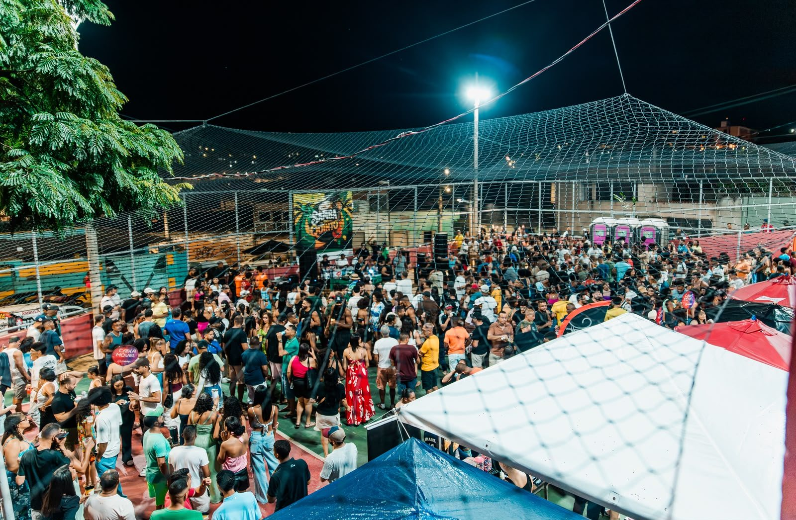
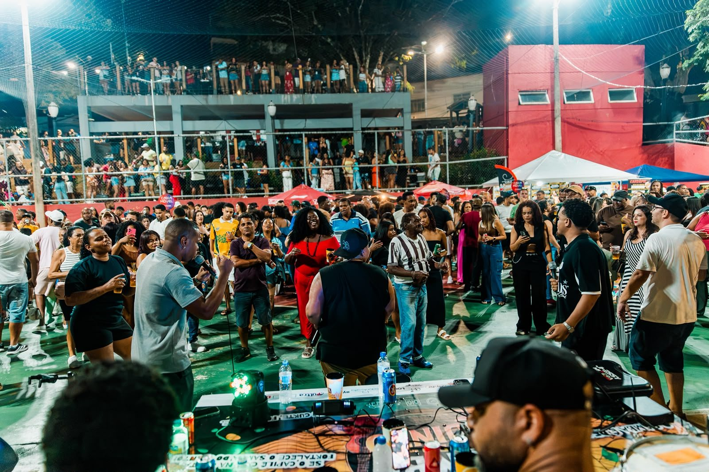
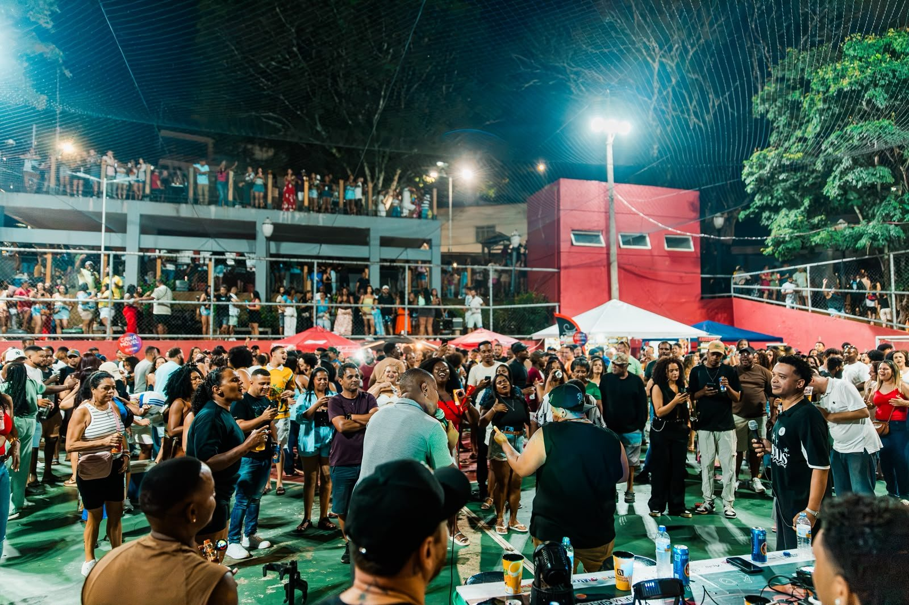
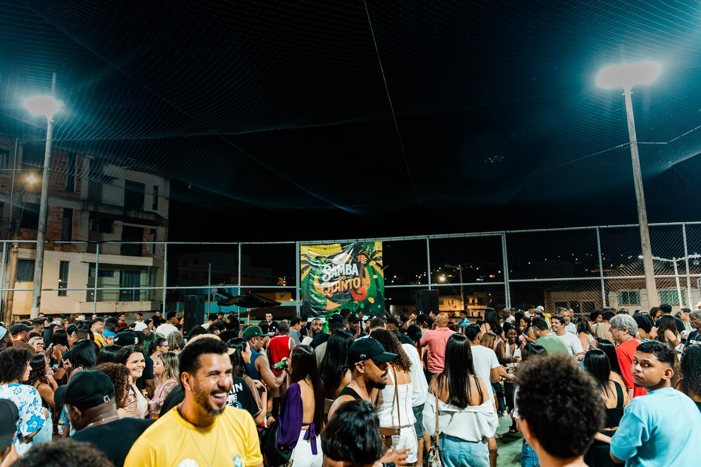

Samba do Quinto
Praça cheia e comunidade reunida: Samba do Quinto celebra participação popular e pede apoio para continuar
Edição na Praça São Tomé movimentou o Major Lage de Baixo e fortaleceu a parceria com a Associação de Moradores
- Quando
- Onde Praça São Tomé, bairro Major Lage de Baixo, Itabira
- Realização Instituto Alcântara

A música levou moradores e visitantes à Praça São Tomé, no bairro Major Lage de Baixo, no último sábado, 17 de outubro. Com apresentações de Jhessy, Lucão e Leozinho, o Samba do Quinto reuniu famílias e amigos em uma tarde de programação gratuita, valorização dos artistas de Itabira e convivência na praça.
Realizado pelo Instituto Alcântara, o encontro também movimentou o comércio e criou oportunidades de trabalho e renda para pessoas do bairro. A parceria com a Associação de Moradores aproximou o projeto das iniciativas da comunidade.
Para Alexandre Lennon, presidente da Associação de Moradores do Major Lage de Baixo, o resultado foi positivo.
“Tivemos a praça cheia, com atividades durante o dia inteiro e pessoas do bairro trabalhando e gerando renda. Isso é muito bom para a comunidade. Além de trazer movimento, o evento contribuiu para fortalecer os projetos sociais da associação. Ficamos felizes com essa parceria e com a participação dos moradores”, afirma.


Como o Samba do Quinto se mantém
O diretor-presidente do Instituto Alcântara, Marcos Alcântara, diz que a presença das famílias e o envolvimento dos bairros são a principal razão para seguir com o projeto. Ele ressalta, porém, que manter a programação gratuita exige recursos.
“É muito bom chegar à praça e ver as pessoas reunidas, cantando e aproveitando o bairro. É para isso que fazemos o Samba do Quinto. Mas precisamos falar também do que existe antes desse momento: equipe trabalhando, ensaios dos artistas, combustível, traslados, impostos e taxa de alvará. A entrada é gratuita, mas essas despesas precisam ser pagas”, explica.
O projeto possui um único ponto oficial de comercialização. A receita obtida nesse espaço ajuda a custear as edições, já que o Samba do Quinto não conta com outras fontes de renda.
“Por isso, fazemos um pedido a quem participa: consuma no ponto oficial do projeto. Quando a pessoa leva cooler ou compra em outro local, esse consumo não ajuda a pagar as despesas do Samba do Quinto. A gente entende que cada um faz suas escolhas, mas é importante que todos saibam como o evento se mantém. Consumir no nosso ponto é uma forma de ajudar o próximo encontro a acontecer”, destaca Marcos.
Segundo ele, o trabalho do Instituto, a dedicação dos artistas e as contribuições de apoiadores em produtos e serviços têm permitido levar o projeto aos bairros. Ainda assim, a continuidade depende de maior participação do público no custeio.
“Tem muita gente se esforçando para fazer acontecer. Queremos continuar, mas precisamos que as pessoas estejam junto com a gente nesse cuidado. Quem gosta do Samba do Quinto e quer vê-lo novamente na praça pode ajudar a manter esse trabalho”, acrescenta.

Antes de chegar ao Major Lage de Baixo, o Samba do Quinto passou pelos bairros Pará, Santa Tereza e Amazonas. A proposta combina apresentações musicais com momentos de aula-show, compartilhando histórias, repertórios e referências das raízes do samba.
A edição na Praça São Tomé contou com o apoio da Associação de Moradores do Major Lage de Baixo e da Prefeitura de Itabira, por meio da Secretaria de Governo.